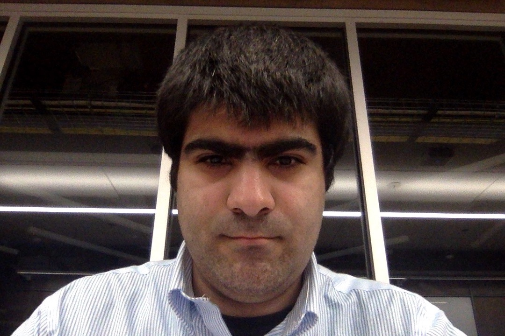

A Tutorial and Resources for Fair Clustering
Fair Clustering & Unsupervised Learning
The goal of this tutorial is to introduce a wide audience interested in algorithmic fairness to the nascent research area of fair clustering. Specifically, we wish to present a variety of fairness notions used in the context of clustering, argue about the necessity of each of those through corresponding applications, discuss the relationships between different notions, sketch the algorithmic ideas that were developed in order to address the corresponding computational problems, and finally share our thoughts about the future of research in algorithmic fairness. By the end of the tutorial, the audience will have achieved a significant level of familiarity with multiple definitions of fairness in the unsupervised learning context, and we hope that researchers will use these ideas in contexts both within and adjacent to the clustering context, in both industrial and academic applications.
AAAI 2022 Schedule
| Section | Speaker | Duration | Slides |
|---|---|---|---|
| Introduction to Clustering Paradigms | Seyed Esmaeili | 30 minutes + 5 minutes QnA | pdf, pptx |
| Notions of Demographic Fairness | Marina Knittel and Leonidas Tsepenekas | 1 hour + 5 minutes QnA | pdf, pptx |
| Break | 15 minutes | ||
| Notions of Individual Fairness | Leonidas Tsepenekas | 45 minutes + 5 minutes QnA | pdf, pptx |
| Algorithmic Aspects of Fair Clustering | Seyed Esmaeili | 20 minutes + 5 minutes QnA | |
| Risks of Use and Advice for Responsible, Interdisciplinary Work | Brian Brubach | 45 minutes + 5 minutes QnA | pdf, pptx |
About Us
This is ongoing research and work led by the following team; if you are interested in joining, please feel free to reach out!
-
Pranjal Awasthi (Google):
-
Brian Brubach (Wellesley): Brian Brubach is an Assistant Professor of Computer Science at Wellesley College and an Affiliate of the Institute for Mathematics and Democracy. His research focuses on algorithms and theoretical computer science with broad applications in areas such as e-commerce, algorithmic fairness, and electoral systems.
-
Deeparnab Chakrabarty (Dartmouth): Deeparnab Chakrabarty is an associate professor of computer science at Dartmouth. His research interests involve the interplay of optimization and algorithms, with applications in data science, machine learning, and algorithmic economics.
-
John Dickerson (UMD & Arthur): John P Dickerson is Assistant Professor of Computer Science at Maryland, as well as Chief Scientist of Arthur AI. He is recipient of the NSF CAREER Award, IEEE Intelligent Systems AI's 10 to Watch, and a Google Faculty Research Award, and others. His research centers on solving economic problems using techniques from stochastic optimization and machine learning.
-
Seyed Esmaeili (UMD): Seyed Esmaeili is a 5th year PhD student at the University of Maryland, College Park. His research interests are in machine learning, algorithms, and fairness. More specifically, his work focuses on producing algorithms with theoretical guarantees that address fairness issues in various topics such as clustering, matching, and redistricting.
-
Matthäus Kleindessner (Amazon): Matthäus Kleindessner is a Research Scientist at Amazon AWS in Tübingen, Germany, working on algorithmic fairness. He has a PhD from the University of Tübingen and did postdocs at Rutgers University and the University of Washington.
-
Marina Knittel (UMD): Marina Knittel is a fourth year PhD student at the University of Maryland studying theoretical computer science and artificial intelligence. Her research focuses on fairness and scalability for algorithms on massive networks, including adaptive and non-adaptive massively parallel computation (AMPC and MPC), fairness in graph partitioning, and mechanism design.
-
Jamie Morgenstern (UW & Google): Jamie Morgenstern is an assistant professor at the University of Washington. She studies the social impact of machine learning and the impact of social behavior on ML's guarantees. How should machine learning be made robust to behavior of the people generating training or test data for it? How should we ensure that the models we design do not exacerbate inequalities already present in society?
-
Samira Samadi (MPI-IS): Samira Samadi is a research group leader at the Max Planck Institute for Intelligent Systems in Tübingen, Germany. She studies the interactions between humans and ML and uses her findings to design ML systems that augment humans’ abilities. She got her Ph.D. from the School of Computer Science at Georgia Tech.
-
Aravind Srinivasan (UMD & Amazon): Aravind Srinivasan is a Distinguished University Professor and Professor of Computer Science at the University of Maryland, College Park. His research interests include algorithms, probabilistic methods, data science, network science, and machine learning: theory, and applications in areas including health, E-commerce, cloud computing, Internet advertising, and fairness.
-
Leo Tsepenekas (UMD): Leonidas Tsepenekas is a 5th year PhD student at the University of Maryland, College Park. Leonidas' research interests revolve around Algorithmic Fairness and Stochastic Models for Combinatorial Optimization. Specifically, he is interested in identifying meaningful notions of fairness, translating them into rigorous mathematical objects, and incorporating them in classical algorithmic problems.